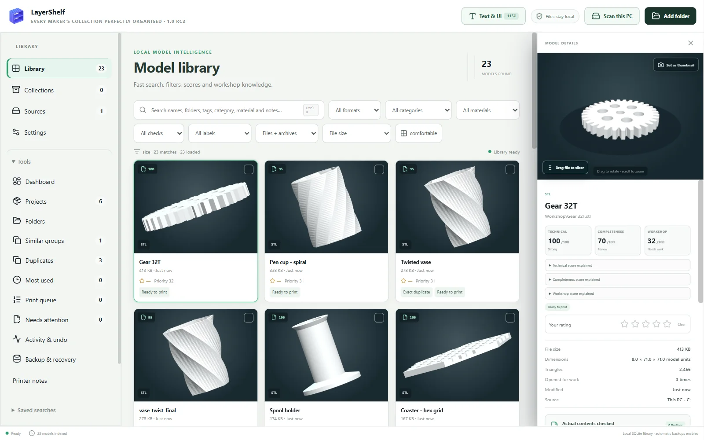
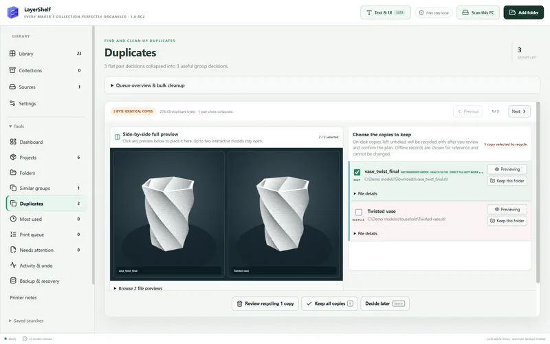
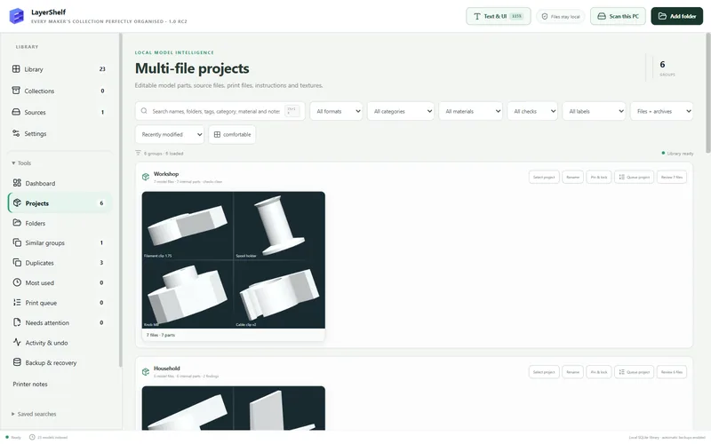
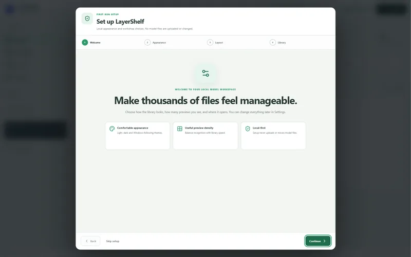

For Windows · for makers with too many STLs
Every 3D model on your PC, in one searchable library.
LayerShelf finds the STL, 3MF and OBJ files scattered across your folders and downloads, shows them as thumbnails you can actually browse, and tells you which ones are the same model saved twice — even under different names.
One-off payment · Windows 10 and 11 · no account, no subscription, nothing uploaded

Find the same model twice — even when it's called something else
Exact copies are matched by their contents, so vase_twist_final.stl in Downloads is caught as
the same file as Twisted vase.stl. Variants are matched by the shape itself, whether they were
rotated, moved or scaled.
Each group is one decision: compare the copies side by side in 3D, keep the ones you want, and send the spares to the Windows Recycle Bin — where you can still restore them.

Multi-part models stay together
A print with a base, a lid and a README is one project, not three loose files. LayerShelf groups multi-file models into projects you can rename, pin and send to the print queue in one go.

Your files stay exactly where they are
LayerShelf catalogues your models in place. Setup never uploads or moves a file, and nothing is moved unless you plan and confirm it yourself.
There's no account and no telemetry. LayerShelf only goes online to check your licence key, and the catalogue lives on your own PC. Read the privacy policy.

Everything else a workshop library needs
Search everything
Names, folders, tags, notes, category and material, from one box. Ctrl K jumps straight to it.
3D preview
Spin a model before you open a slicer. Drag a file straight from LayerShelf into your slicer.
Tags, ratings and notes
Rate prints, add tags and categories, record the material, and keep long notes on each model.
Print queue and printer notes
Queue what's next with quantity and material, and keep notes for each of your printers.
Recovery points
The catalogue backs itself up, and a restore asks you to confirm first. (Back up your model files separately.)
Big libraries welcome
Built for collections of thousands of models, with checks that flag files it couldn't read instead of hiding them.
Formats: STL, 3MF, OBJ, FBX, STEP/STP, PLY, GLB and glTF, plus models inside ZIP files (and RAR or 7z if 7-Zip is installed). 3D previews for STL, 3MF, OBJ, FBX, PLY, GLB and glTF; shape matching for STL, 3MF and OBJ.
LayerShelf for Windows
£9.99 one-off
Launch price for the first 200 customers, then £12.99.
- Runs on Windows 10 and 11 (64-bit)
- Use it on up to 2 PCs
- No subscription, no account
- Download link and licence key emailed straight away
- 14-day no-quibble refund
Checkout, receipts and any VAT are handled by Lemon Squeezy, our reseller. Terms and refunds
Before you install
LayerShelf isn't code-signed yet, so Windows shows a blue "Windows protected your PC" screen the first time. Click More info, then Run anyway.
If your PC has Smart App Control switched on, Windows blocks unsigned apps completely. Email us before you buy and we'll help.
Windows 10 or 11, 64-bit. Allow a few GB for thumbnails on a large library.
Questions
Does LayerShelf change or upload my model files?
No. Scanning only reads your files. Nothing is uploaded, and nothing is moved or recycled unless you review and confirm it.
Do I need an internet connection or an account?
There's no account or sign-in. LayerShelf needs the internet only to check your licence key: once when you activate it, then a one-click check every 30 days. Everything else works offline.
Can I use it on more than one PC?
Yes, on up to 2 PCs at a time. To move to a new PC, deactivate the old one in the app first. See the install guide.
What if it doesn't work for me?
Ask within 14 days for a full refund. Just reply to your receipt email. See terms and refunds.
What happens to duplicates I remove?
They go to the Windows Recycle Bin, so you can restore them from there until you empty it.
Something isn't working on my PC.
Email creationverse896@gmail.com — a real person reads it. See the support page for what to include.